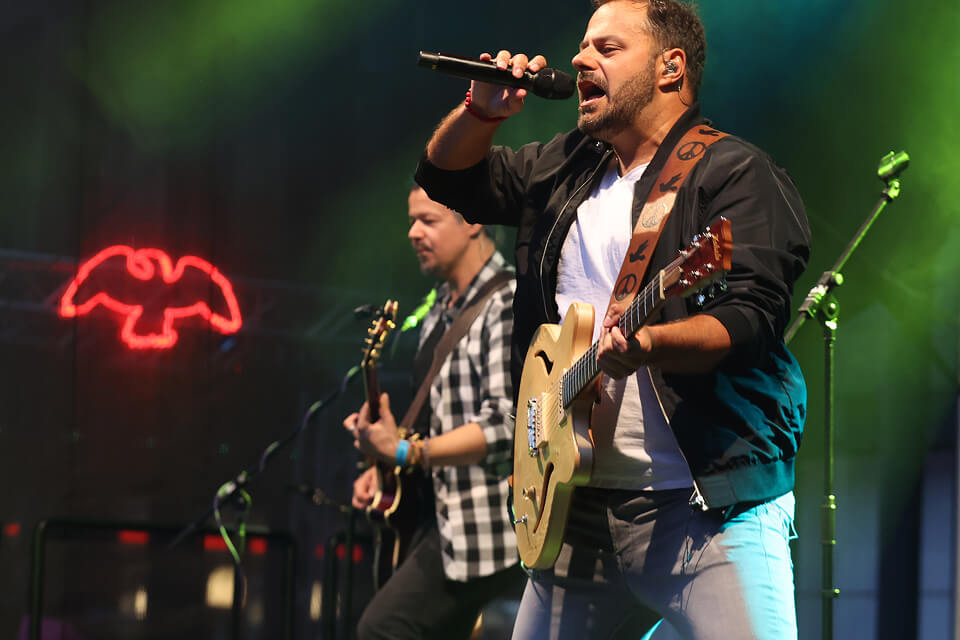
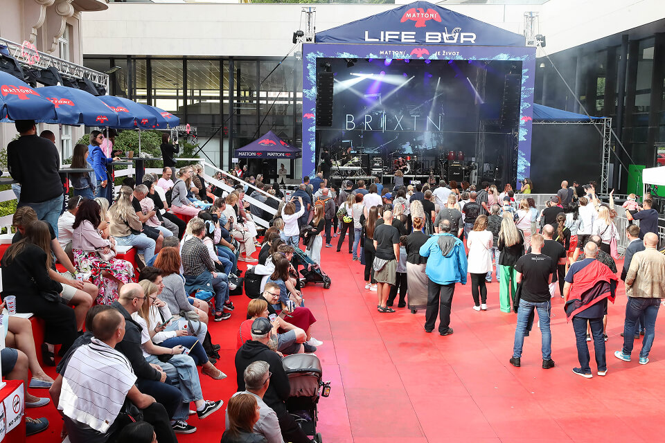
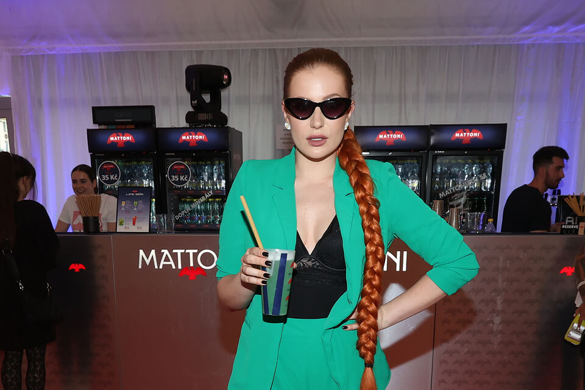
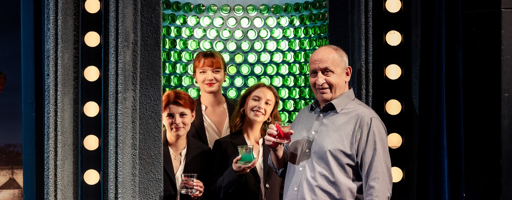

Příroda je nekonečným zdrojem inspirace. Proto se může stát minerální voda Mattoni čímkoliv chce - uměním, hudbou i životním stylem. Osvěžte se s námi na našich akcích!

Příroda je nekonečným zdrojem inspirace. Proto se může stát minerální voda Mattoni čímkoliv chce - uměním, hudbou i životním stylem. Osvěžte se s námi na našich akcích!
Tuto nejprestižnější českou kulturní událost propojujeme s oslavou života. Festivalová atmosféra totiž nabízí nejen nezapomenutelné zážitky, ale nové příležitosti.
Pás mezi Vřídlem a říčkou Teplá každoročně měníme v bezplatnou zónu patřící hudbě, relaxu, osvěžujícím drinkům a dobrému jídlu. Kdo by nechtěl být live na koncertu hvězd, jako jsou například Ewa Farna, Tata Bojs, David Koller, Dan Bárta, Chinaski, Monkey Business? Navíc s drinkem v ruce ze světového šampionátu barmanů Mattoni Grand Drink? Pohárky a láhve pak stačí předat do zálohových automatů Lovců PETek.
Naším posláním je hledat a podporovat nové talenty z řad barmanů, hudebníků a módních návrhářů. Stačí se přihlásit do soutěží Mattoni Grand Drink Junior, Mattoni Music Talent a Mattoni Young Fashion Star a zazářit.



Jsme hrdí na to, že jsme také neodmyslitelnou součástí mnoha kulturních akcí. Díky partnerství Mattoni a Národního divadla si můžete inscenace všech uměleckých souborů užívat plnými doušky.
Budeme vám po boku, ať už si zajdete na balet, operu, nebo činohru. V Národním divadle, v budově Nové scény i Stavovského divadla.

S Národním muzeem nás spojuje nejen naše dlouhá historie, ale také společný zájem o lepší budoucnost. Proto je naším společným tématem ekologická udržitelnost a voda, bez které by neexistoval život.
V minulosti jste v prostorách budovy mohli navštívit první udržitelnou kolekci oděvů a díky speciálnímu koši recyklovat svoji vypitou PET lahev.


Radost pohledět je na největší módní událost Mercedes-Benz Prague Fashion Week. A proto zde nesmíme chybět! Díky naší soutěži Mattoni Young Fashion Stars zde nechybí ani nejtalentovanější čeští designéři.
Vítězové získají jedinečnou příležitost prezentovat svoji tvorbu na Mezinárodním filmovém festivalu Karlovy Vary. Jak řekl majitel společnosti Mattoni 1873 Alessandro Pasquale: „Věřím, že vítězné modely přinesou na červený koberec svěží vítr, upoutají pozornost a pomohou svým autorům nastartovat úspěšnou designérskou kariéru.“


Mattoni nenajdete pouze v Čechách, ale i na Moravě. Jsme partnerem Lednicko-valtického hudebního festivalu a součástí nejen kvalitních uměleckých zážitků, ale i regionální tradice a kultury.
Navštivte na přelomu září a října festival a jeho doprovodné akce. Milovníkům klasické hudby každoročně přináší nejen originální zážitek, ale i nový vhled do historie kraje a jeho staveb.

Kdo by neznal televizní show, kde si chladnou tvář nezachová snad ani největší mrzout. Do show, kam si Jan Kraus zve známé i méně známé hosty, kteří jsou vždy něčím zajímaví, nebo výjimeční. Mattoni tuto nejikoničtější talk show v Česku podporuje.
Od roku 2025 jsme se zapojili také do projektu Mattoni bar. Pořad je nejen pro diváky atraktivní, zároveň také podporuje dobrou myšlenku nealko koktejlů. A to v hlavním vysílacím čase.
